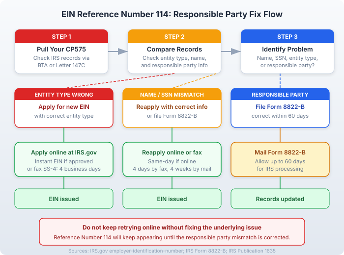

The short version
TL;DR: IRS EIN Reference Number 114 means the responsible party information on your EIN application does not match IRS records. This is not a technical glitch. Fix it by comparing your CP575 or Letter 147C against your state formation documents, then correct any mismatches using Form 8822-B. If the entity type itself is wrong, you may need a new EIN entirely.Last updated: 2026-08-18
What Reference Number 114 Actually Means
When you apply for an EIN through the IRS online portal and see Reference Number 114, the IRS is telling you that the responsible party information you entered does not match what they have on file. This is not a technical error (like Reference Numbers 109 through 113) or a name mismatch with your state filing (like Reference Number 112). Reference Number 114 is specific: the IRS has flagged a problem with the responsible party.
The responsible party is the person who owns, controls, or exercises effective control over the business entity. According to the IRS, the responsible party must be a person, not an entity (with the sole exception of government entities). On your EIN application, you must provide the responsible party's name and their Social Security number (SSN) or individual taxpayer identification number (ITIN).
Reference Number 114 fires when any of the following are true:
- The responsible party's name does not match IRS records exactly
- The SSN or ITIN provided does not match what the IRS has on file for that person
- The entity type you selected on the application does not match the entity type the IRS has on record
- The responsible party is listed as a nominee rather than the actual person with control over the entity
- Your entity already has an EIN and the new application conflicts with existing records
How to Fix Reference Number 114 (Step by Step)
Step 1: Pull Your IRS Records
Before you do anything else, find out what the IRS actually has on file. You have three options:
- Business Tax Account (BTA): Log in to the IRS Business Tax Account portal and download your digital CP575 confirmation notice.
- Request Letter 147C: Call the IRS Business & Specialty Tax Line at 800-829-4933 and request Letter 147C, EIN Previously Assigned.
- Request an Entity Transcript: You can also request a business tax transcript through the IRS.
Do not skip this step. If you do not know what the IRS has, you cannot figure out what is wrong.
Step 2: Compare Against Your State Formation Documents
Pull your Articles of Organization (for an LLC) or Articles of Incorporation (for a corporation). Check three things side by side:
- Entity type: Does the entity type on your state filing match what you selected on the EIN application?
- Responsible party name: Does the name match exactly? Middle names, suffixes (Jr., Sr., III), and legal name variations can cause mismatches.
- Taxpayer ID: Does the SSN or ITIN match the person's actual taxpayer ID? A single digit off will trigger this error.
Step 3: Correct the Mismatch
- Name or responsible party mismatch: File Form 8822-B, Change of Address or Responsible Party -- Business to update the responsible party information. You must report changes within 60 days.
- Entity type mismatch: This is more serious. You may need to apply for a new EIN with the correct entity type. Apply online at IRS.gov or file Form SS-4 by fax (855-641-6935).
- SSN/ITIN mismatch: Double-check the number. If it was a typo, reapply with the correct number.

Common Mistakes That Trigger Reference Number 114
- Entity type confusion: Selecting "LLC" when the IRS has your entity classified as a corporation (or vice versa). This is the most common cause.
- Name variations: The responsible party's legal name includes a middle name or suffix that was omitted on the EIN application.
- SSN transposition errors: A single digit entered incorrectly in the SSN or ITIN field.
- Using a nominee instead of the responsible party: The IRS explicitly states that nominees cannot apply for an EIN.
- Applying before state formation is complete: If you apply before your entity is officially formed with the state, the IRS may not have matching records.
Resolution Timeline
- Reapplying online (new EIN): Instant if approved.
- Fax Form SS-4: Approximately 4 business days.
- Mail Form SS-4: Approximately 4 weeks.
- Filing Form 8822-B: Allow up to 60 days. If you have not received confirmation within 60 days, mail a copy with "Second Request" written on it.
When to Call the IRS
Call the IRS Business & Specialty Tax Line at 800-829-4933 (Monday through Friday, 7:00 AM to 7:00 PM local time) if:
- You have pulled your CP575 or Letter 147C and still cannot figure out what is wrong
- You believe the IRS has incorrect information on file and Form 8822-B will not fix it
- You need to confirm whether your entity already has an EIN assigned under a different name or entity type
- You are a non-U.S. founder without an SSN or ITIN and need to apply by phone
Call early in the morning for the shortest hold times. During peak periods, hold times can exceed 60 minutes.
Non-U.S. Founders: Special Considerations
If your principal place of business is outside the United States, you cannot use the IRS online EIN application. You must apply by phone at 267-941-1099 (Monday through Friday, 6:00 AM to 11:00 PM Eastern), by fax, or by mail.
Non-U.S. founders are more likely to encounter Reference Number 114 because they may not have an SSN or ITIN, entity type classification can be more complex for international structures, and the responsible party information may not match IRS records if the entity was recently formed.
A formation service like doola specializes in helping non-U.S. founders get EINs. They handle the IRS coordination and paperwork so you do not have to navigate the phone system yourself. doola also bundles LLC formation with EIN application, which eliminates the entity-type mismatch problem entirely.
Frequently Asked Questions
Does Reference Number 114 mean my application was rejected?
Yes, in the sense that the IRS will not issue an EIN until the mismatch is resolved. But it does not mean your information is permanently flagged. Fix the mismatch and reapply or file Form 8822-B.
Is Reference Number 114 the same as Reference Number 112?
No. Reference Number 112 means your business name does not match your state registration. Reference Number 114 means the responsible party information (name, taxpayer ID, or entity type) does not match IRS records.
Can I fix Reference Number 114 without filing Form 8822-B?
It depends on the cause. If the issue is a simple typo or incorrect entity type selection, you can reapply online with the correct information. If the IRS has incorrect responsible party information on file, you will need Form 8822-B.
How long does Form 8822-B take to process?
The IRS says to allow up to 60 days. If you do not receive confirmation within that window, mail a copy of your submitted Form 8822-B with "Second Request" written on it.
Can I get an EIN online if I got Reference Number 114?
It depends. If the fix is a typo or incorrect entity type selection, yes, you can reapply online with the corrected information. If the issue is that the responsible party information needs to be updated via Form 8822-B first, you will need to wait for that to process.
What if I keep getting Reference Number 114 no matter what?
Call the IRS Business & Specialty Tax Line at 800-829-4933. There may be an existing EIN on file for your entity that you are not aware of, or the IRS may have incorrect records that require direct intervention to fix.